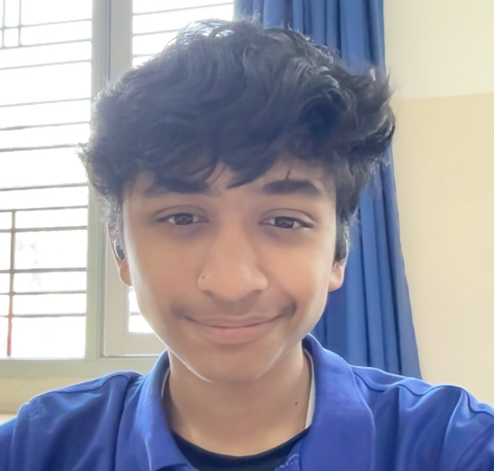

Resume
Name: Arjun Agrawal
Age: 15

SUMMARY
I'm a determined, stubborn and hardworking student. I operate well under pressure and love soliacising and being amidst creativeness
EDUCATION
- Currently enrolled in The International School, Bangalore (TISB), studying 9 subjects in the IGCSE curriculum
- Physics
- Chemistry
- Biology
- Computer Science
- Mathematics
- Geography
- Englosh Language
- English Literature
- French
WORK EXPERIENCE
Content Creation -
Dealt with the entire editorial job of school magazine in the year 2020
-
hired to do content editing and scripting for fellow content creation channels
Computer Science -
hired for summer internships in the year 2021 for full stack web development and python usages
-
Head of the computer science club in school
SKILLS
- fluent in the python programming language with optimisation for eal world problem solving skills
- journeying through the skills required to become a full stack web developer by utilising the MERN stack
- Sufficient knowledge of the microsoft suite
- experienced in editorial jobs through the use of Wondershare Filmora, IMovie, Canva and more
AWARDS AND CERTIFICATIONS AND HOBBIES
-
Top 10 coder in Cuemaths Programming championship
-
Head of Coputer Science Club
-
First place in team website development tournament, code fiesta
-
Topper in student potential test conducted by school
-
Cricket and Table tennis awards for player of the series, Man of the match and inter school victories
-
Sports and Video game fanatic
CONTACT ME